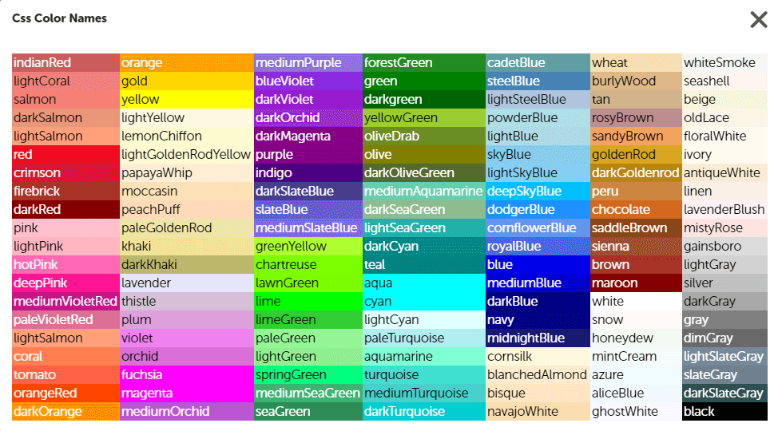

currentColor:
Coloca el color definido anteriormente a todos los elementos
currentColor:
Coloca el color definido anteriormente a todos los elementos
Color Keywords:
Son palabras que se usan para denotar el color Estos son los colores básicos y extendidos (No olvidar el color transparente):
 Color RGB:
Textos rgb
Textos rgba
Textos Hexadecimal
Color HSL:
¿Qué significan?
Color 0
Color 90
Color 180
color 270
Degradado Lineal
Son imágenes (background-image)
Degradados lineales
Stops
Indican porcentaje o tamaño fijo, con el porcentaje indicamos a partir de donde empieza el degradado
Degradados lineales
Ángulo de degradado
Indican porcentaje o tamaño fijo, con el porcentaje indicamos a partir de donde empieza el degradado, Se usan grados (90deg) tambien se puede hacer con direcciones: to top , to botton, to top right (esquinas)
Degradados lineales
Degradado Radial
Para indicar el centro se usa: at coordenada x coordenada y , tambien funciona en stop , los atributos size (tamaño) y shape (forma (circle - ellipse)) trabajan en conjunto
Ejercicio: ying-yang